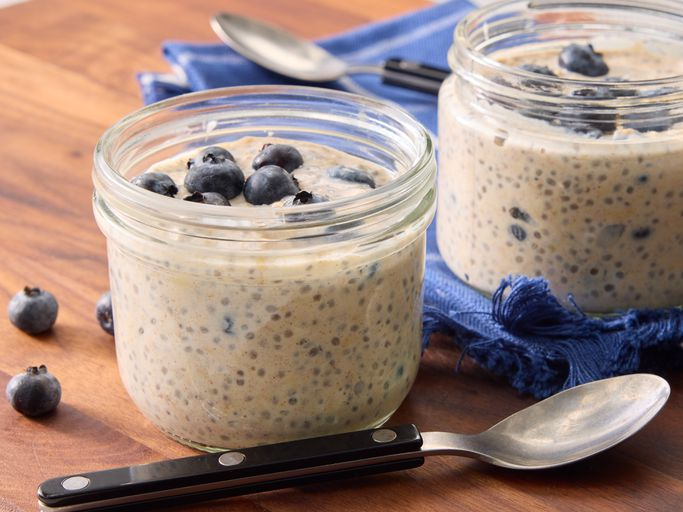

Overnight Oats

Description
Overnight Oats are a quick means of having a nutritious breakfast. You can make several servings
as part of your meal prep, and they stay good for a few days.
There are endless customizations you can make to this recipe.
Ingredients
- Steelcut Oats
- Chia seeds
- Hemp seeds
- Milk
- Protein powder
- Greek yogurt
Steps
- Get out all of your mason jars and funnel
- 1/2 cup of oats
- 3 tbp of hemp seeds
- 2 tbp of chia seeds
- 2 scoops of protein powder
- Cup of greek yogurt
- Fill the jar up with milk